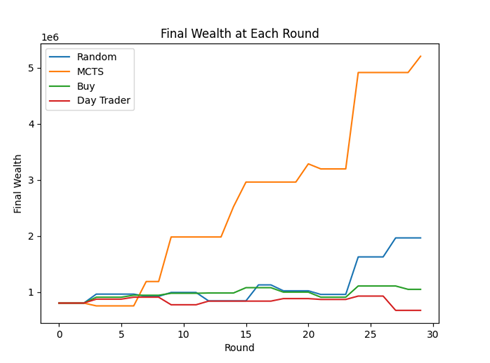
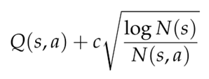

Investiture Game RL Bot
Outcome:
Developed an online Monte Carlo Tree Search solver for the stock market simulator board game Investiture. Worked with a teammate to create an OpenAI Gym environment to model game mechanics. Modelled the problem as a Partially Observable Markov Decision Process, and designed the optimal policy solver to beat three other common stock market policies.
Motivation:
The aim of this project was to train an agent to execute the optimal policy for the board game Investiture, which simulates the stock market, where the goal for players is to beat the market and end the game with more money than the other players. During each round of the game, a player has 3 turns, during which they can buy, sell or short shares in one of six different companies. At the end of the round, based on the cards that each player has, stock prices are updated. The player with the most money after 10 rounds wins the game. The trained agent’s performance will be compared with three other players: player one’s strategy is to randomly decide to buy, sell, and short stocks, player two decides to buy and hold stocks as long as possible, and player three decides to buy stocks and immediately sell them as soon as the prices change.
The board game itself is a sequential decision problem. Each round, a player is given 10 cards that either raise/lower the price of a stock. After 3 turns, the changes to the stock price are updated, and 10 new cards are dealt to each player. Our player can buy or sell stocks in multiples of 1000 shares per company, given the total shares left from the state space (where each time stock is bought/sold in a company counting as one turn). When shorting, our player can only short by 5000 shares or 10000 shares. Whenever stocks are bought/sold or whenever the short is cleared, the in-hand cash value changes accordingly. Our goal for our player is to maximize the reward, which is the sum of the in-hand cash and stock value of our player. Each round of this problem can be modelled such that states that are affected by other players are observed, and affect the chosen action by our agent, which in turn generates a reward for taking that action from that state.
Results:
Since the state space of this problem is very large, online planning methods that find actions based on the reachable state (which is orders of magnitude smaller than the full state space) is a much more computationally efficient approach. We were drawn to using a Monte Carlo Tree Search solver, which randomly samples actions by estimating the action-value function using counts and values associated with histories.
The main difference between the full state an the observable state is that the agent only knows its cash, owned shares, and cards, rather than knowing that for all players. This causes uncertainty for the agent when it comes to both what other players will do and with how the prices will update at the end of the round. The action space is also quite large with over 2400 total actions that can be performed. The total state space is absolutely massive and combined with the large action space makes finding a globally optimal solution impossible.
Our reward function is based on a combination of the agent’s state and action. The reward is calculated by combining the reward gained from the agent’s action with the reward for its state. The action reward is an immediately greedy reward whose formulation varies on the type of action. The state reward is calculated as the difference in the agent’s wealth between rounds, where the wealth is the total value of the agent’s assets.

As you can see in the figure above, our agent is vastly better than the non-learning agents. Not only does the agent have over twice as much as the next best player at the end of the game, but the agent is continuously making better moves than the other players throughout the 30 rounds. Surprisingly, random actions resulted in good performance as well. This shows the game is accurate to the real stock market where random choices are able to outperform curated portfolios.
Being my first foray into reinforcement learning, this was a particularly challenging project to complete. Having never simulated multi-agent behavior and never training an agent using a RL method, there was a particularly steep learning curve to overcome. However, this project (and class) gave me a comprehensive understanding of the multitude of RL tools that can be used to make decisions under uncertainty.
Technical Details:

To implement our own agent, an OpenAI Gym environment was created to imitate the Investiture game. The solver works by simulating 1000 games to a depth of 10 turns from the current state. During these simulations, the algorithm updates estimates of the action value function Q(s,a) and a record of the number of times a particular state-action pair has been selected, N(s, a). After running these m simulations from our current state s, we simply choose the action that maximizes our estimate of Q(s,a). The simulations were run using an exploration strategy that maximizes the UCB1 exploration heuristic equation below, using an exploration constant of 100.